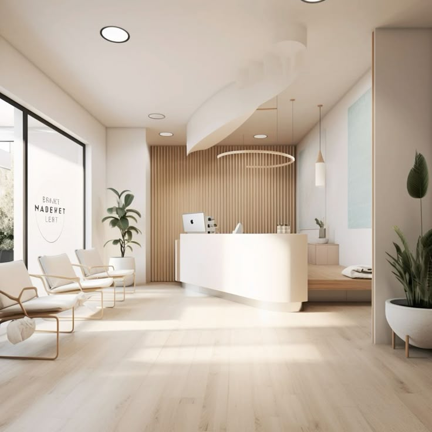

Cabinet d'ostéopathie du Grand-Quevilly
Un espace de soin dédié à votre santé, avenue des Provinces. Thomas Lefebvre, ostéopathe D.O., met son expertise au service de votre bien-être depuis le cœur de l'agglomération rouennaise.
Votre ostéopathe au Grand-Quevilly — Thomas Lefebvre
Votre ostéopathe au Grand-Quevilly est Thomas Lefebvre, praticien diplômé en ostéopathie (D.O.) d'un établissement agréé par le Ministère de la Santé. Enregistré au répertoire ADELI de Seine-Maritime, il exerce dans le respect du cadre réglementaire défini par le décret du 25 mars 2007 relatif aux actes et aux conditions d'exercice de l'ostéopathie.
Formation et parcours
Thomas Lefebvre a suivi un cursus de cinq années en ostéopathie, intégrant l'anatomie, la physiologie, la biomécanique et la sémiologie médicale. Après l'obtention de son diplôme, il a complété sa formation par des stages cliniques en milieu hospitalier et des formations continues en ostéopathie pédiatrique, périnatale et sportive. Son parcours lui a permis de développer une approche pluridisciplinaire, fondée sur l'écoute du patient et la rigueur du diagnostic palpatoire.
Avant de s'installer au Grand-Quevilly, il a exercé plusieurs années dans l'agglomération rouennaise, ce qui lui a donné une connaissance fine des besoins de santé de la population locale.
Spécialisations
Le cabinet propose des prises en charge spécialisées dans plusieurs domaines complémentaires :
L'ostéopathie du sport accompagne les athlètes amateurs et confirmés dans la prévention des blessures, la récupération après l'effort et l'optimisation de la performance. L'ostéopathie pédiatrique et périnatale s'adresse aux nourrissons, aux enfants et aux femmes enceintes avec des techniques adaptées à chaque âge. La prise en charge des troubles musculo-squelettiques chroniques — lombalgies récurrentes, cervicalgies d'origine posturale, douleurs liées au travail sédentaire — constitue une part importante de l'activité du cabinet. Pour en savoir plus, consultez la page dédiée à nos spécialisations.
Le cabinet
Un cadre adapté à votre prise en charge
Le cabinet d'ostéopathie du Grand-Quevilly a été pensé pour offrir un environnement propice au soin. La salle de consultation est équipée d'une table de traitement professionnelle à hauteur variable, ce qui facilite les mobilisations et garantit votre confort pendant toute la durée de la séance. L'éclairage naturel, les tons neutres et l'absence de bruit extérieur créent une atmosphère calme et rassurante.
Une salle d'attente accueillante est à votre disposition. Le cabinet est climatisé en été et chauffé en hiver pour assurer votre confort quelle que soit la saison.

Localisation et accès
Situé au 8 avenue des Provinces, 76120 Le Grand-Quevilly, le cabinet occupe une position centrale dans la commune. L'avenue des Provinces est l'un des axes principaux du Grand-Quevilly, reliant le quartier résidentiel au centre commercial des Bruyères et à la mairie.
L'accès est pratique depuis l'ensemble de la Métropole Rouen Normandie. Les lignes du réseau Astuce (TEOR et bus) desservent l'avenue des Provinces. Plusieurs places de parking gratuites sont disponibles le long de l'avenue et dans les rues adjacentes. Le cabinet est de plain-pied, sans aucune marche, et entièrement accessible aux personnes à mobilité réduite, aux poussettes et aux fauteuils roulants.
Depuis Rouen, comptez environ dix minutes en voiture par le boulevard industriel. Depuis Sotteville-lès-Rouen ou le Petit-Quevilly, l'accès se fait en cinq minutes par les voies principales. Les habitants de Canteleu rejoignent le cabinet en traversant la Seine par le pont Guillaume-le-Conquérant.
Notre engagement qualité
La qualité de la prise en charge repose sur trois piliers au cabinet du Grand-Quevilly. L'écoute d'abord : chaque consultation commence par un entretien approfondi pour comprendre votre motif, votre historique médical et vos attentes. La rigueur diagnostique ensuite : l'examen clinique et palpatoire permet d'identifier précisément les zones de restriction de mobilité avant toute intervention. L'accompagnement personnalisé enfin : des conseils posturaux, d'hygiène de vie et d'exercices sont systématiquement proposés en fin de séance pour prolonger les bénéfices du traitement.
Thomas Lefebvre s'engage à vous réorienter vers un médecin ou un spécialiste si votre situation le nécessite. L'ostéopathie s'inscrit dans une démarche complémentaire et ne se substitue jamais à un suivi médical lorsque celui-ci est indiqué. Pour comprendre le déroulement complet d'une séance, rendez-vous sur la page consultation.
Questions fréquentes sur le cabinet
Thomas Lefebvre est ostéopathe diplômé (D.O.), titulaire d'un diplôme délivré par un établissement agréé par le Ministère de la Santé. Inscrit au répertoire ADELI de Seine-Maritime, il exerce au Grand-Quevilly et prend en charge adultes, sportifs, femmes enceintes, nourrissons et seniors.
Oui, le cabinet situé au 8 avenue des Provinces est de plain-pied et entièrement accessible aux personnes à mobilité réduite. L'entrée ne comporte aucune marche et la salle de consultation est dimensionnée pour accueillir un fauteuil roulant ou une poussette sans difficulté.
Le cabinet est situé au 8 avenue des Provinces, 76120 Le Grand-Quevilly, dans un quartier résidentiel calme à proximité du centre commercial des Bruyères. Des places de stationnement gratuites sont disponibles devant le cabinet et le réseau de transport Astuce dessert l'avenue.
Thomas Lefebvre est spécialisé en ostéopathie du sport, ostéopathie pédiatrique et périnatale, et prise en charge des troubles musculo-squelettiques chroniques. Il a complété sa formation initiale par des certifications en techniques crâniennes et viscérales.
Le cabinet fonctionne uniquement sur rendez-vous pour garantir un temps de consultation suffisant à chaque patient. Vous pouvez réserver votre créneau par téléphone au 02 35 07 68 42 ou via la page contact du site. En cas d'urgence, des créneaux prioritaires sont réservés chaque jour pour les situations aiguës.
Prenez rendez-vous au cabinet du Grand-Quevilly
Le cabinet vous accueille du lundi au vendredi de 9h à 19h et le samedi de 9h à 13h.
Prendre rendez-vous